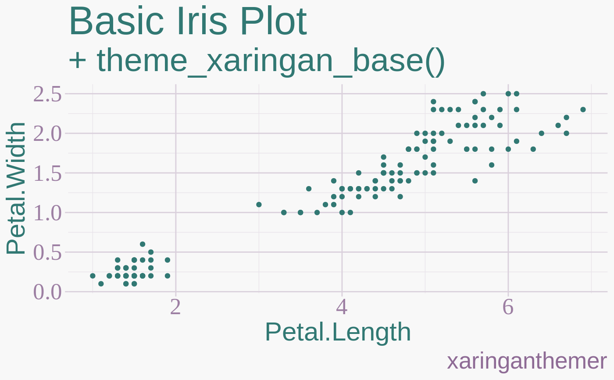
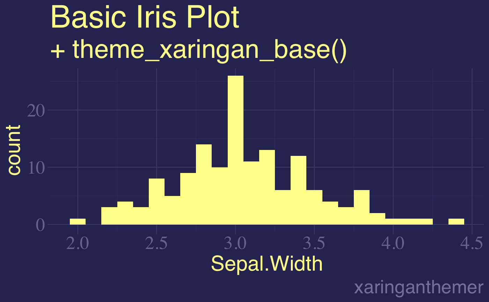

![[Maturing]](figures/lifecycle-maturing.svg)
Provides a base plot theme for ggplot2 to match the xaringan
slide theme created by xaringanthemer. The theme is designed to create a
general plot style from two colors, a background_color and a text_color
(or foreground color). Also accepts an accent_color and an
accent_secondary_color that are xaringanthemer is not required for the
base theme. Use theme_xaringan() or theme_xaringan_inverse() in xaringan
slides styled by xaringanthemer for a plot theme that matches the slide
style. See vignette("ggplot2-themes") for more information and examples.
theme_xaringan_base( text_color, background_color, ..., set_ggplot_defaults = TRUE, accent_color = NULL, accent_secondary_color = NULL, text_font = NULL, text_font_use_google = NULL, text_font_size = NULL, title_font = NULL, title_font_use_google = NULL, title_font_size = NULL, use_showtext = TRUE )
Arguments
| text_color | Color for text and foreground |
|---|---|
| background_color | Color for background |
| ... | Ignored |
| set_ggplot_defaults | Should defaults be set for ggplot2 geoms?
Defaults to TRUE. To restore ggplot's defaults, or the previously set geom
defaults, see |
| accent_color | Color for titles and accents, inherits from
|
| accent_secondary_color | Color for secondary accents, inherits from
|
| text_font | Font to use for text elements, passed to
|
| text_font_use_google | Is |
| text_font_size | Base text font size, inherits from |
| title_font | Font to use for title elements, passed to
|
| title_font_use_google | Is |
| title_font_size | Base text font size, inherits from |
| use_showtext | If |
Value
A ggplot2 theme
See also
Other xaringanthemer ggplot2 themes:
theme_xaringan_inverse(),
theme_xaringan_set_defaults(),
theme_xaringan()
Examples
# Requires ggplot2 has_ggplot2 <- requireNamespace("ggplot2", quietly = TRUE) if (has_ggplot2) { library(ggplot2) plot1 <- ggplot(mpg) + aes(cty, hwy) + geom_point() + theme_xaringan_base( text_color = "#602f6b", # imperial background_color = "#f8f8f8", # light gray accent_color = "#317873", # myrtle green title_font = "sans", text_font = "serif", set_ggplot_defaults = TRUE ) + labs( title = "Fuel Efficiency of Various Cars", subtitle = "+ theme_xaringan_base()", caption = "xaringanthemer" ) print(plot1) plot2 <- ggplot(mpg) + aes(hwy) + geom_histogram(binwidth = 2) + theme_xaringan_base( text_color = "#a8a9c8", # light purple background_color = "#303163", # deep slate purple accent_color = "#ffff99", # canary yellow title_font = "sans", text_font = "serif", set_ggplot_defaults = TRUE ) + labs( title = "Highway Fuel Efficiency", subtitle = "+ theme_xaringan_base()", caption = "xaringanthemer" ) print(plot2) }